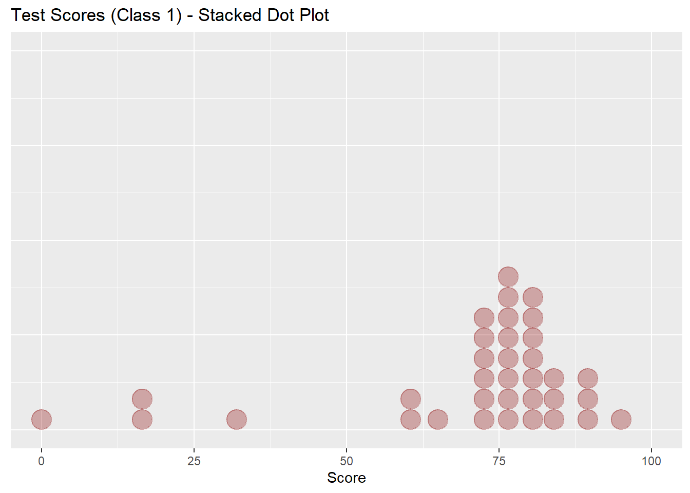
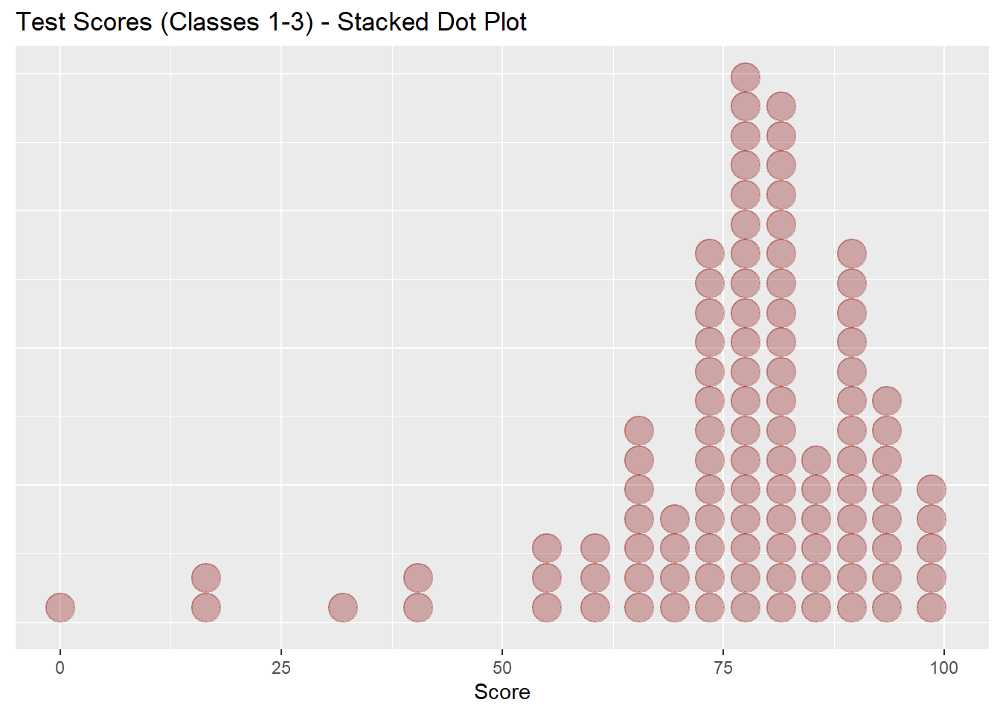
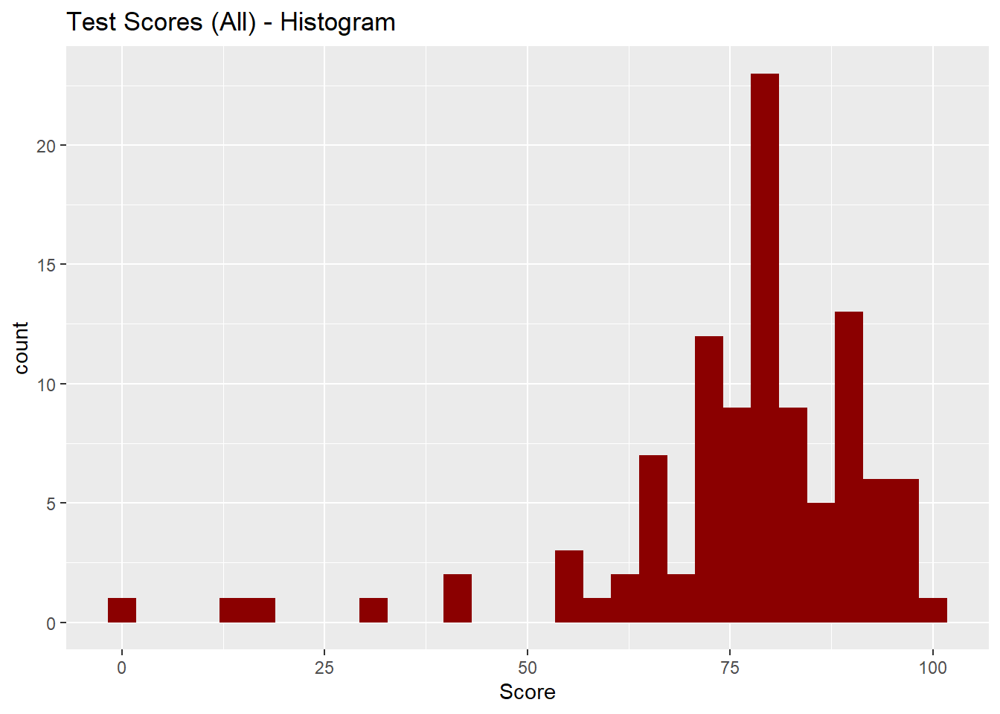
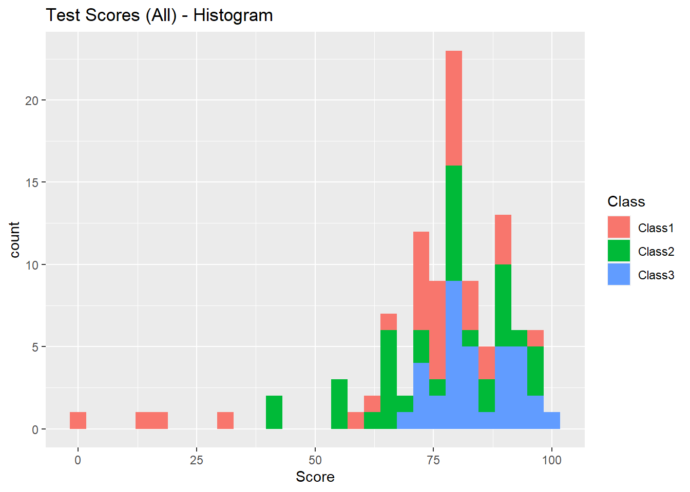
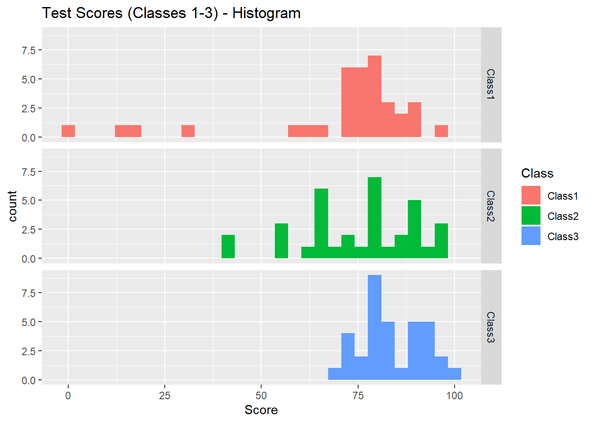
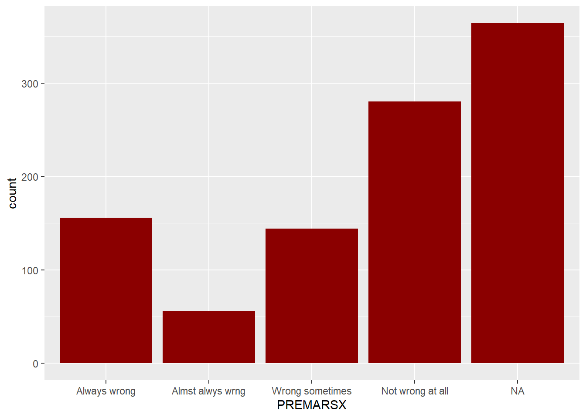
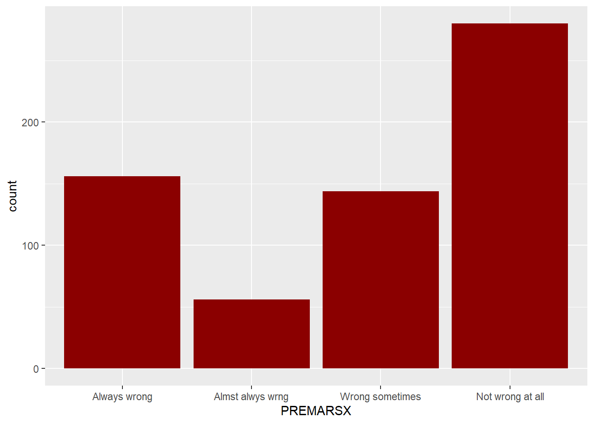
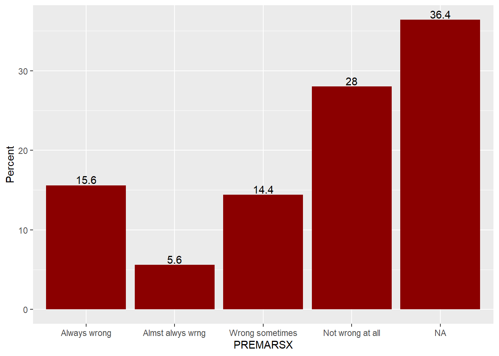
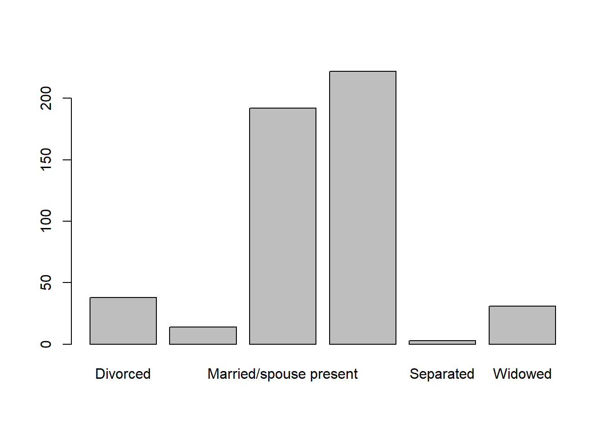
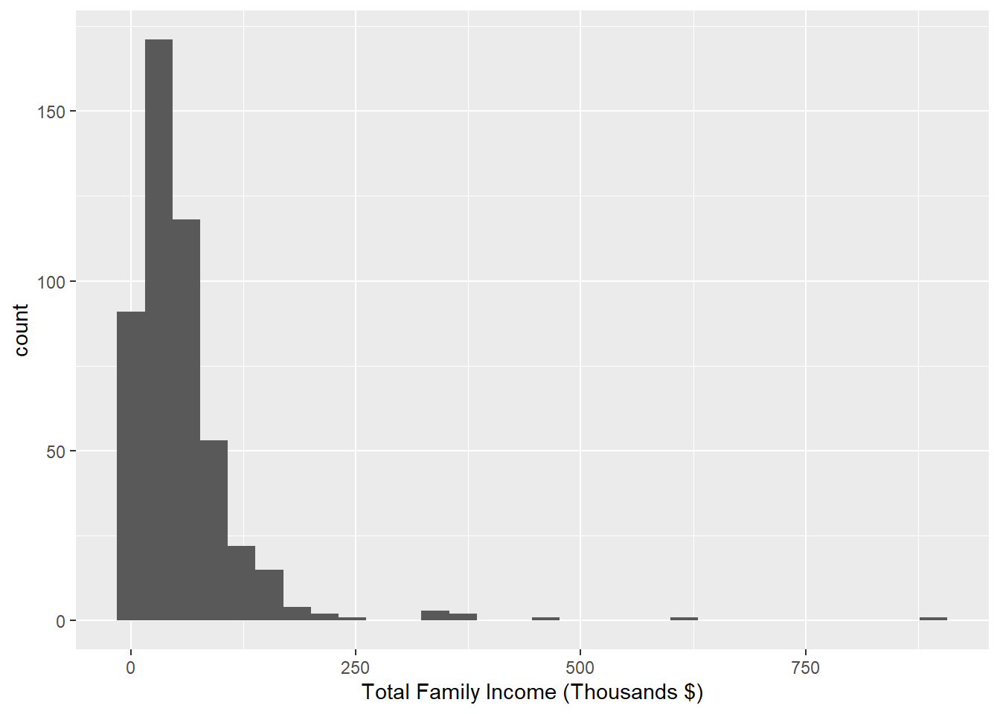

Download the datasets for this class:
You can download this whole script as ComputerAssignment_03.Rmd file to save on your computer and open in RStudio instead of copying & pasting from this webpage:
#install.packages("dplyr") # install packages if they are not installed yet
#install.packages("ggplot2") # (uncomment the command before executing it by removing '#' in front of it)
#install.packages("knitr")
#install.packages("summarytools")
library(dplyr) # for manipulating data
library(ggplot2) # for making graphs
library(knitr) # for nicer table formatting
library(summarytools) # for frequency distribution tables(See Lecture Notes for Week 3 on iCollege to read about interpreting frequency tables)
Assume you are studying charitable performance and have two samples of charities - one sample of 10 charities “Datasets/s10.RData” and one sample of 100 charities. Each sample contains data on charity ratings. Let’s read the datasets into R and generate frequency tables for each ssample:
load("Datasets/s10.RData") # load charity ratings data: the sample of 10
freq(s10)## Frequencies
##
## Freq % Valid % Valid Cum. % Total % Total Cum.
## ----------- ------ --------- -------------- --------- --------------
## 1 1 10.00 10.00 10.00 10.00
## 2 1 10.00 20.00 10.00 20.00
## 4 4 40.00 60.00 40.00 60.00
## 5 4 40.00 100.00 40.00 100.00
## <NA> 0 0.00 100.00
## Total 10 100.00 100.00 100.00 100.00load("Datasets/s100.RData") # load charity ratings data: the sample of 100
freq(s100)## Frequencies
##
## Freq % Valid % Valid Cum. % Total % Total Cum.
## ----------- ------ --------- -------------- --------- --------------
## 1 5 5.00 5.00 5.00 5.00
## 2 13 13.00 18.00 13.00 18.00
## 3 16 16.00 34.00 16.00 34.00
## 4 33 33.00 67.00 33.00 67.00
## 5 33 33.00 100.00 33.00 100.00
## <NA> 0 0.00 100.00
## Total 100 100.00 100.00 100.00 100.00Let’s read the dataset with student test scores into R and print the scores on the screen:
test_scores <- read.csv("Datasets/TestScores.csv")
data.frame("Class 1" = test_scores[test_scores$Class=="Class1" , "Score"],
"Class 2" = test_scores[test_scores$Class=="Class2" , "Score"],
"Class 3" = test_scores[test_scores$Class=="Class3" , "Score"] ) %>% kable(align = c("l","l","l"))| Class.1 | Class.2 | Class.3 |
|---|---|---|
| 79 | 75 | 100 |
| 75 | 78 | 80 |
| 82 | 82 | 93 |
| 91 | 88 | 85 |
| 88 | 92 | 90 |
| 78 | 56 | 70 |
| 79 | 85 | 72 |
| 75 | 90 | 77 |
| 78 | 78 | 79 |
| 0 | 81 | 81 |
| 74 | 79 | 80 |
| 77 | 64 | 82 |
| 81 | 67 | 77 |
| 90 | 41 | 78 |
| 74 | 40 | 92 |
| 71 | 61 | 98 |
| 85 | 68 | 83 |
| 65 | 79 | 83 |
| 73 | 89 | 92 |
| 81 | 64 | 79 |
| 77 | 97 | 80 |
| 74 | 95 | 71 |
| 85 | 73 | 94 |
| 15 | 91 | 92 |
| 82 | 56 | 79 |
| 79 | 64 | 83 |
| 18 | 74 | 81 |
| 32 | 67 | 98 |
| 95 | 67 | 73 |
| 77 | 54 | 91 |
| 83 | 97 | 74 |
| 74 | 87 | 84 |
| 76 | 80 | 91 |
| 60 | 89 | 88 |
| 61 | 81 | 89 |
Let’s generate a contingency table:
testscores <- read.csv("Datasets/TestScores.csv")
summarytools::freq(testscores$Score) #Oops, NOT VERY USEFUL !!!## Frequencies
##
## Freq % Valid % Valid Cum. % Total % Total Cum.
## ----------- ------ --------- -------------- --------- --------------
## 0 1 0.95 0.95 0.95 0.95
## 15 1 0.95 1.90 0.95 1.90
## 18 1 0.95 2.86 0.95 2.86
## 32 1 0.95 3.81 0.95 3.81
## 40 1 0.95 4.76 0.95 4.76
## 41 1 0.95 5.71 0.95 5.71
## 54 1 0.95 6.67 0.95 6.67
## 56 2 1.90 8.57 1.90 8.57
## 60 1 0.95 9.52 0.95 9.52
## 61 2 1.90 11.43 1.90 11.43
## 64 3 2.86 14.29 2.86 14.29
## 65 1 0.95 15.24 0.95 15.24
## 67 3 2.86 18.10 2.86 18.10
## 68 1 0.95 19.05 0.95 19.05
## 70 1 0.95 20.00 0.95 20.00
## 71 2 1.90 21.90 1.90 21.90
## 72 1 0.95 22.86 0.95 22.86
## 73 3 2.86 25.71 2.86 25.71
## 74 6 5.71 31.43 5.71 31.43
## 75 3 2.86 34.29 2.86 34.29
## 76 1 0.95 35.24 0.95 35.24
## 77 5 4.76 40.00 4.76 40.00
## 78 5 4.76 44.76 4.76 44.76
## 79 8 7.62 52.38 7.62 52.38
## 80 4 3.81 56.19 3.81 56.19
## 81 6 5.71 61.90 5.71 61.90
## 82 4 3.81 65.71 3.81 65.71
## 83 4 3.81 69.52 3.81 69.52
## 84 1 0.95 70.48 0.95 70.48
## 85 4 3.81 74.29 3.81 74.29
## 87 1 0.95 75.24 0.95 75.24
## 88 3 2.86 78.10 2.86 78.10
## 89 3 2.86 80.95 2.86 80.95
## 90 3 2.86 83.81 2.86 83.81
## 91 4 3.81 87.62 3.81 87.62
## 92 4 3.81 91.43 3.81 91.43
## 93 1 0.95 92.38 0.95 92.38
## 94 1 0.95 93.33 0.95 93.33
## 95 2 1.90 95.24 1.90 95.24
## 97 2 1.90 97.14 1.90 97.14
## 98 2 1.90 99.05 1.90 99.05
## 100 1 0.95 100.00 0.95 100.00
## <NA> 0 0.00 100.00
## Total 105 100.00 100.00 100.00 100.00Too long and not very informative (because there are too many values that the variable take), isn’t it?
Instead of displaying and calculating the frequency for each value the numeric (interval level) variable takes, we can cut the range of values into intervals using the command cut():
score_intervals <- cut(x = testscores$Score, breaks = c(0,60,70,80,90,100), include.lowest = TRUE)Now we can generate a frequency distribution for the intervals:
summarytools::freq(score_intervals)## Frequencies
##
## Freq % Valid % Valid Cum. % Total % Total Cum.
## -------------- ------ --------- -------------- --------- --------------
## [0,60] 10 9.52 9.52 9.52 9.52
## (60,70] 11 10.48 20.00 10.48 20.00
## (70,80] 38 36.19 56.19 36.19 56.19
## (80,90] 29 27.62 83.81 27.62 83.81
## (90,100] 17 16.19 100.00 16.19 100.00
## <NA> 0 0.00 100.00
## Total 105 100.00 100.00 100.00 100.00test_scores <- read.csv("Datasets/TestScores.csv") library(ggplot2)
test_scores %>% filter(Class == "Class1") %>%
ggplot(aes(x=Score)) +
geom_dotplot(fill="darkred", color="darkred", alpha = 0.3) +
xlim(0,100) +
theme(axis.title.y=element_blank(),
axis.text.y=element_blank(),
axis.ticks.y=element_blank()) +
labs(title = "Test Scores (Class 1) - Stacked Dot Plot")## `stat_bindot()` using `bins = 30`. Pick better value with `binwidth`.
test_scores %>%
ggplot(aes(x=Score)) +
geom_dotplot(fill="darkred", color="darkred", alpha = 0.3) +
xlim(0,100) +
theme(axis.title.y=element_blank(),
axis.text.y=element_blank(),
axis.ticks.y=element_blank()) +
labs(title = "Test Scores (Classes 1-3) - Stacked Dot Plot")## `stat_bindot()` using `bins = 30`. Pick better value with `binwidth`.
This is not practical when the number of observations in the dataset is large!
Instead, use a histogram:
ggplot(data = test_scores) + geom_histogram(aes(x = Score), bins = 30, fill = "darkred") +
labs(title = "Test Scores (All) - Histogram")
ggplot(data = test_scores) + geom_histogram(aes(x = Score, fill = Class)) +
labs(title = "Test Scores (All) - Histogram")## `stat_bin()` using `bins = 30`. Pick better value with `binwidth`.
ggplot(data = test_scores) + geom_histogram(aes(x = Score, fill = Class)) + facet_grid(Class ~ .) +
labs(title = "Test Scores (Classes 1-3) - Histogram")## `stat_bin()` using `bins = 30`. Pick better value with `binwidth`.
For categorical (nominal or ordinal) variables, use bar charts:
gss98 %>% ggplot() + geom_bar( aes(x = PREMARSX), fill = "darkred" )
Same, but but without missing values:
gss98 %>% filter(!is.na(PREMARSX)) %>% ggplot() + geom_bar( aes(x = PREMARSX), fill = "darkred" )
#library(tidyr)
#gss98 %>% tidyr::drop_na(PREMARSX) %>% ggplot() + geom_bar( aes(x = PREMARSX), fill = "darkred" )Bar plot with relative frequencies and value labels:
gss98 %>% group_by(PREMARSX) %>% summarise(Percent = 100*n()/nrow(gss98)) %>% # Calculate % for PREMARSX
ggplot( mapping = aes(x = PREMARSX, y = Percent, label = Percent)) + # Map aesthetics
geom_bar( stat="identity", fill = "darkred" ) + # added stat="identity"
geom_text(vjust = -0.2) # adjust height of the labels## Warning: Factor `PREMARSX` contains implicit NA, consider using
## `forcats::fct_explicit_na`
census_year - Census Year.state_fips_code - Name of state.total_family_income - Total family income (in U.S. dollars).age - Age.sex - Sex with levels Female and Male.race_general - Race with levels American Indian or Alaska Native, Black, Chinese, Japanese, Other Asian or Pacific Islander, Two major races, White and * Other.marital_status - Marital status with levels Divorced, Married/spouse absent, Married/spouse present, Never married/single, Separated and Widowed.total_personal_income - Total personal income (in U.S. dollars).census <- read.csv("C:/Users/admin/Dropbox/PhD/00_Coursework/13sem_4041_Spring2020/R/Datasets/census.csv")
library(summarytools)Frequency distributions for census$marital_status:
freq(census$marital_status) %>% kable(digits = 2)| Freq | % Valid | % Valid Cum. | % Total | % Total Cum. | |
|---|---|---|---|---|---|
| Divorced | 38 | 7.6 | 7.6 | 7.6 | 7.6 |
| Married/spouse absent | 14 | 2.8 | 10.4 | 2.8 | 10.4 |
| Married/spouse present | 192 | 38.4 | 48.8 | 38.4 | 48.8 |
| Never married/single | 222 | 44.4 | 93.2 | 44.4 | 93.2 |
| Separated | 3 | 0.6 | 93.8 | 0.6 | 93.8 |
| Widowed | 31 | 6.2 | 100.0 | 6.2 | 100.0 |
| 0 | NA | NA | 0.0 | 100.0 | |
| Total | 500 | 100.0 | 100.0 | 100.0 | 100.0 |
ggplot(data = census) + geom_bar(mapping = aes(x = marital_status)) + theme(axis.text.x = element_text(angle = 45, hjust = 1))
Frequency distributions for census$total_family_income:
income_intervals <- cut(x = census$total_family_income/1000, breaks = c(0,25,50,75,100,999), include.lowest = TRUE)
summarytools::freq(income_intervals)## Frequencies
##
## Freq % Valid % Valid Cum. % Total % Total Cum.
## --------------- ------ --------- -------------- --------- --------------
## [0,25] 148 30.52 30.52 29.60 29.60
## (25,50] 138 28.45 58.97 27.60 57.20
## (50,75] 90 18.56 77.53 18.00 75.20
## (75,100] 48 9.90 87.42 9.60 84.80
## (100,999] 61 12.58 100.00 12.20 97.00
## <NA> 15 3.00 100.00
## Total 500 100.00 100.00 100.00 100.00ggplot(data = census) + geom_histogram(mapping = aes(x = total_family_income/1000)) + xlab("Total Family Income (Thousands $)")## `stat_bin()` using `bins = 30`. Pick better value with `binwidth`.## Warning: Removed 15 rows containing non-finite values (stat_bin).
Download the datasets for this class: